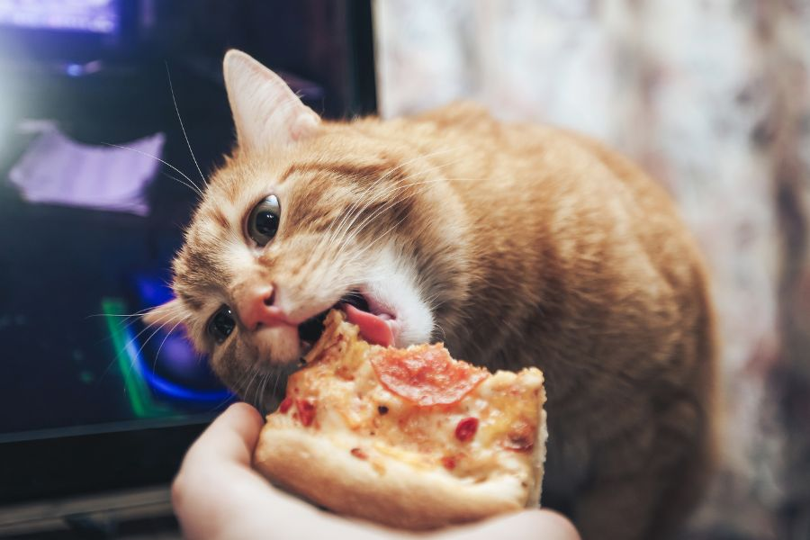

Checkers' Homemade Trader Joe's Cheese Pizza

Description
When Checkers was growing up as a young kitty full of spunk and energy back in
Kirksville, MO, his humans would sometimes order out for pizza. He relished
the opportunity to swipe some cheesy goodness when they weren't looking. Checkers'
go to method was to jump on the table and haphazardly tear pieces of cheese
off the fresh pie.
The following recipe is a simple cheese pizza with red sauce, which Checkers
brought from his Midwestern motherland.
Ingredients
Garlic pizza dough from Trader Joe's
Red sauce from Trader Joe's
Shredded Mozzarella cheese from Trader Joe's
Olive oil
Instructions
- Set the oven to 425.
- Remove the dough from the refrigerator. Let it gradually warm up for 30 minutes.
- While waiting, grease the pizza pan with olive oil.
- After 30 minutes, roll the dough into a circle or square, depending on your pan of choice. Make sure the dough fits neatly into the pan.
- Prebake the crust for 2-3 minutes. This will allow the dough to cook more fully with ingredients topping it in the oven.
- Evenly spread red sauce on the rolled dough.
- Evenly distribute cheese across the pizza.
- Insert the pizza into the oven.
- Cook pizza for 9-12 minutes, or until crust lightly browns.
- Take pizza out and cut immediately into squares or triangle slices. Enjoy.